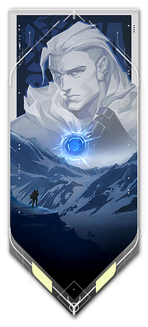
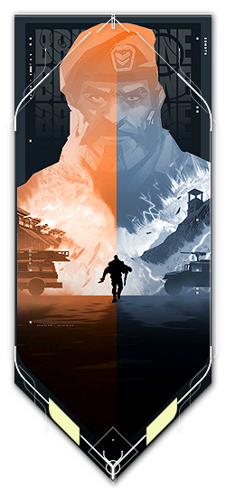
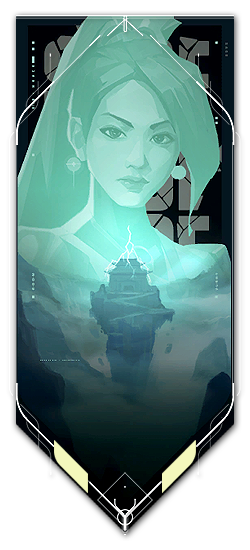
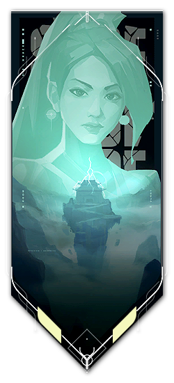
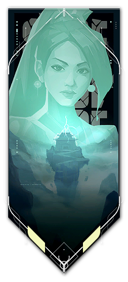
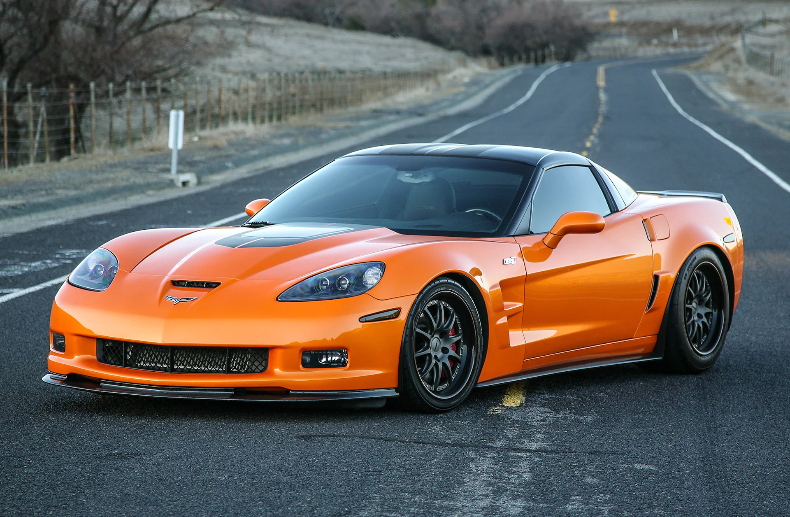

Me llamo Fabrizio
Tengo 19 años. Vivo en Yerba Buena, Tucuman. Hago este curso de programación web porque me gusta todo lo que está relacionado con la computación y porque me gusta aprender cosas nuevas para expandir mi conocimiento. Me gustan mucho los animales, no por nada tengo cinco gatos y tres perros. Soy fanatico del fútbol, pero equipos como Boca y Real Madrid son a los que más sigo. Me apasiona la Formula 1 y los autos en general, pero hay uno que me tiene loco. Trato de ir todos los días al gym ya que es importante cuidar nuestra salud y en mis tiempos libres la paso jugando o hablando con mis amigos. Soy un tanto reservado en algunos aspectos pero soy alguien sincero que le gusta escuchar y ayudar a los demás.
Futbol - Formula 1
El futbol es mi deporte favorito, soy el unico en mi casa que le gusta, desde chico que soy hincha de Boca porque me gusta la combinacion del azul y el amarillo. En el fútbol de Europa le voy mas al mas grande, el Real Madrid, pero me gusta ver partidos de la Premier League y al PSG de Messi. Después me gusta mucho la Fórmula 1, no soy de ninguna escudería pero me inclino mas por Red Bull, me apasiona más ver la velocidad de los monoplazas y el riesgo que implica dicha competición ya que no esta hecho para pueda conducir, se requiere mucha dedicacion, disiplina, responsabilidad y destreza. Es un deporte que te enseña que no importa lo rapido que puede ir tu vehiculo si no vas a estar capacitado para manejarlo y no estoy hablando de autos.
Valorant
Uno de mis juegos favoritos es el Valorant, a veces saca lo peor de mí, pero aun así me divierto jugando con amigos y lo juego más para pasar el tiempo. Hay días en los que no quiero ni abrir el juego pero es una buena opción para compartir y pasar el rato chileando con tus amigos. Si juegas conmigo nunca te va a faltar un iniciador porque es lo único que sé jugar.
   


Chevrolet Corvette Z06
Desde niño que mi gusto por los autos es bastante grande. Juegos como el Need For Speed y el Gran Turismo influyeron mucho en mi gusto por los autos. Incluso sigo teniendo la pequeña colección de Hot Whells que tenía cuando era mas chico. Si bien me gustan modelos como el Toyota Supra MK4, Nissan Skyline GTR R34 o el Mazda RX-7, hay uno que desde el primer momento que lo vi se convirtió en el auto de mis sueños. El Chevrolet Corvette Z06 del 2006 es el auto que me encantaría tener estacionado en el garage. Posee un motor V8 con 670 caballos de fuerza lo que le permite alcanzar una velocidad máxima de 320 km/h. Tiene un buen diseño aerodinámico y se puede adaptar para cualquier tipo de competición.

Un poquito de musica
Mi gusto por la música es bastante amplio y es gracias a mi papá, si bien escuchó un gran número de géneros musicales, mis preferidos son la salsa, la cumbia y el trap. Mi banda favorita es The Score que hacen un estilo de rock alternativo.